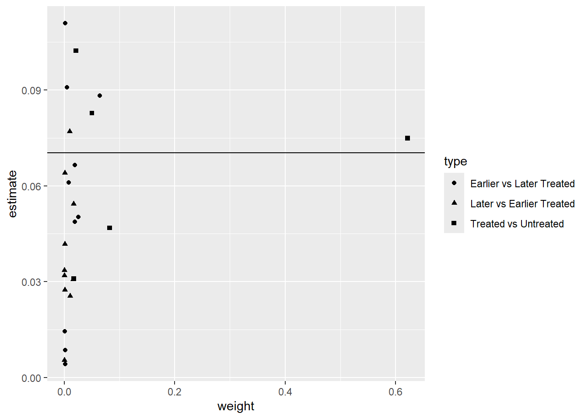

wd <- divorce %>%
filter(year>=1964 & year<=1996 & sex==2) %>%
mutate(suicide_rate=suicide*1000000/(stpop*fshare),
year=as.numeric(year),
divyear = ifelse(divyear>1996, Inf, divyear),
unilateral=ifelse(year>divyear, 1, 0))Respuestas a la tarea 3
Pregunta 1
Stevenson, B. & Wolfers, J. (2006)1 estudian los efectos de la introducción de leyes que permiten el divorcio unilateral en los Estados Unidos. La librería bacondecomp incluye los datos usados en dicho artículo (debe instalar y cargar la librería). Usaremos los datos de 1964 a 1996 para mostrar cómo impactan las leyes de divorcio express (unilateral) a la tasa de suicidios en mujeres.
Al correr el pedazo de código anterior, obtendrá un objeto de datos wd en donde la variable de impacto es la tasa de suicidios en mujeres, suicide_rate, st identifica a los estados, year identifica a los años y divyear es el año en que se introdujo la legislación del divorcio unilateral. La última fila del código crea el indicador de tratamiento unilaterial, que toma el valor de 1 para los estados tratados en los periodos post tratamiento.
[5 puntos] ¿Por qué decimos que esta es una aplicación de la estimación de efectos de tratamiento con adopción escalonada?
En esta aplicación, cada estado comienza a ser tratado en indistintos momentos del tiempo. Si hacemos un tabulado de divyear para un año fijo, notamos cuántos estados se vuelven tratados en cada año:
table(filter(wd, year==1996)$divyear)1950 1969 1970 1971 1972 1973 1974 1975 1976 1977 1980 1984 1985 Inf 9 2 2 7 3 11 3 2 1 3 1 1 1 5El panel comienza en 1964, para cuando ya nueve estados habían sido tratados. Los estados van siendo tratados hasta que, para el fin del periodo analizado, 1996, solo cinco todavía no habían sido tratados. En esta aplicación, esos cinco estados son los nunca tratados.
[5 puntos] Como punto de partida, estime el efecto del tratamiento sobre suicide_rate usando efectos fijos por estado y año (TWFE) y empleando una librería específica para efectos fijos, como felm. Tome en cuenta la agrupación de los errores. Interprete sus resultados.
Usando felm:
summary(felm(suicide_rate ~ unilateral | st + year | 0 | st, data = wd))Call: felm(formula = suicide_rate ~ unilateral | st + year | 0 | st, data = wd) Residuals: Min 1Q Median 3Q Max -37.517 -6.157 -0.141 5.577 57.004 Coefficients: Estimate Cluster s.e. t value Pr(>|t|) unilateral -3.777 2.201 -1.716 0.0923 . --- Signif. codes: 0 '***' 0.001 '**' 0.01 '*' 0.05 '.' 0.1 ' ' 1 Residual standard error: 10.85 on 1599 degrees of freedom Multiple R-squared(full model): 0.6844 Adjusted R-squared: 0.668 Multiple R-squared(proj model): 0.007963 Adjusted R-squared: -0.04353 F-statistic(full model, *iid*):41.77 on 83 and 1599 DF, p-value: < 2.2e-16 F-statistic(proj model): 2.945 on 1 and 50 DF, p-value: 0.09231[5 puntos] Compruebe que puede obtener el mismo resultado con una regresión lineal usando el paquete lm e incluyendo, además de la variable de tratamiento, dummies de estado y de año.
Estimamos con dummies:
summary(m1 <- lm(suicide_rate ~ unilateral + factor(st) + factor(year), data = wd))$coef[1:2,1:3]Estimate Std. Error t value (Intercept) 56.732642 2.468251 22.984953 unilateral -3.776552 1.054148 -3.582562Luego estimamos errores agrupados:
stargazer(m1, type = 'text', se = list(sqrt(diag(vcovCR(m1, cluster = wd$st, type = 'CR1')))), keep = c("unilateral"))=============================================== Dependent variable: --------------------------- suicide_rate ----------------------------------------------- unilateral -3.777* (2.200) ----------------------------------------------- Observations 1,683 R2 0.684 Adjusted R2 0.668 Residual Std. Error 10.851 (df = 1599) F Statistic 41.770*** (df = 83; 1599) =============================================== Note: *p<0.1; **p<0.05; ***p<0.01Obtenemos los mismos coeficientes. Aquí también podrán volver a comprobar la importancia de usar errores agrupados. Sin agrupar, el error estimado asumiendo independencia es casi menos de la mitad que el estimado con la matriz de varianzas agrupada.
[10 puntos] Realice la descomposición de Goodman-Bacon (2021). Construya un gráfico donde muestre en el eje \(x\) el peso otorgado a cada comparación 2x2 que el estimador de TWFE realiza mecánicamente y en el eje \(y\) el efecto estimado correspondiente a cada comparación. Interprete el gráfico obtenido.
Como vimos en clase, la descomposición de Bacon se puede obtener con la función bacon:
#Goodman-Bacon decomposition df_bacon <- bacon(suicide_rate ~ unilateral, data = wd, id_var = "st", time_var = "year")type weight avg_est 1 Earlier vs Later Treated 0.11558 0.13489 2 Later vs Always Treated 0.41990 -6.95245 3 Later vs Earlier Treated 0.23125 2.33743 4 Treated vs Untreated 0.23328 -6.05881coef_bacon <- sum(df_bacon$estimate * df_bacon$weight) print(paste("Weighted sum of decomposition =", round(coef_bacon, 4)))[1] "Weighted sum of decomposition = -3.7766"twfe <- felm(suicide_rate ~ unilateral | st + year | 0 | st, data = wd) #Gráfico---- df_bacon %>% ggplot(aes(x=weight, y=estimate, shape=type)) + geom_point() + geom_hline(yintercept = round(twfe$coefficients, 4))
Las comparaciones que más pesan en el estimador de efectos fijos son las de estados tratados con los que siempre estuvieron tratados en el panel, recibiendo dos de esas comparaciones alrededor de 13 y el 7% del peso (los dos triángulos más hacia la derecha). otra comparación que recibe alrededor de 7% del peso es la de los tratados con los nunca tratados (cruz más hacia la derecha). En total, las comparaciones con los estados que iniciaron siendo tratados se llevan el 42% del peso. Las comparaciones entre los tratados tarde y los tratados temprano también reciben un peso alto de 23%.
[10 puntos] Implemente el estimador de Callaway & Sant’Anna (2021) para estimar los efectos del tratamiento específicos para cada cohorte, usando el paquete did. Utilice como grupo de comparación los estados nunca tratados. La columna stid es un identificador numérico de los estados (lo requerirá cuando use att_gt del paquete did).
atts_nyt <- att_gt(yname = "suicide_rate", tname = "year", idname = "stid", gname = "divyear", data = wd, control_group = "nevertreated", est_method = 'reg', bstrap = TRUE, biters = 1000, print_details = FALSE, panel = TRUE) summary(atts_nyt)Call: att_gt(yname = "suicide_rate", tname = "year", idname = "stid", gname = "divyear", data = wd, panel = TRUE, control_group = "nevertreated", bstrap = TRUE, biters = 1000, est_method = "reg", print_details = FALSE) Reference: Callaway, Brantly and Pedro H.C. Sant'Anna. "Difference-in-Differences with Multiple Time Periods." Journal of Econometrics, Vol. 225, No. 2, pp. 200-230, 2021. <https://doi.org/10.1016/j.jeconom.2020.12.001>, <https://arxiv.org/abs/1803.09015> Group-Time Average Treatment Effects: Group Time ATT(g,t) Std. Error [95% Simult. Conf. Band] 1969 1965 -0.2781 6.8497 -27.2193 26.6632 1969 1966 -3.1857 12.1574 -51.0031 44.6317 1969 1967 12.5043 9.0500 -23.0910 48.0996 1969 1968 3.1310 7.6537 -26.9725 33.2346 1969 1969 1.1566 6.5207 -24.4905 26.8037 1969 1970 -3.5412 13.3245 -55.9490 48.8667 1969 1971 -6.7647 11.0935 -50.3975 36.8682 1969 1972 1.7696 11.9793 -45.3473 48.8864 1969 1973 2.7611 7.4326 -26.4726 31.9948 1969 1974 -0.3084 8.9068 -35.3405 34.7237 1969 1975 -0.7421 5.7094 -23.1983 21.7142 1969 1976 -10.6073 7.6156 -40.5608 19.3462 1969 1977 -3.9320 11.4296 -48.8867 41.0227 1969 1978 -14.0099 12.0164 -61.2727 33.2528 1969 1979 -8.1059 14.7684 -66.1926 49.9807 1969 1980 -10.6943 7.7519 -41.1838 19.7953 1969 1981 -3.4755 12.0847 -51.0070 44.0559 1969 1982 -7.0072 9.0613 -42.6469 28.6326 1969 1983 5.1998 13.3936 -47.4799 57.8794 1969 1984 -10.0771 12.9116 -60.8607 40.7064 1969 1985 5.9598 17.2201 -61.7700 73.6896 1969 1986 -8.5962 12.7169 -58.6141 41.4217 1969 1987 -8.6897 7.9645 -40.0156 22.6362 1969 1988 -11.9815 8.3038 -44.6420 20.6790 1969 1989 -5.9781 14.7386 -63.9477 51.9916 1969 1990 -7.7327 11.1956 -51.7669 36.3016 1969 1991 -14.7659 11.4140 -59.6591 30.1273 1969 1992 -6.6956 6.6277 -32.7637 19.3725 1969 1993 0.5290 12.2110 -47.4993 48.5573 1969 1994 -6.1575 16.3182 -70.3401 58.0250 1969 1995 -6.7870 16.7481 -72.6601 59.0862 1969 1996 3.0338 14.7651 -55.0401 61.1077 1970 1965 3.9098 3.0320 -8.0158 15.8353 1970 1966 -5.7213 10.2335 -45.9715 34.5289 1970 1967 10.0224 8.2269 -22.3354 42.3801 1970 1968 -5.3764 9.1245 -41.2649 30.5121 1970 1969 10.5202 5.3456 -10.5050 31.5454 1970 1970 5.6377 6.8130 -21.1592 32.4347 1970 1971 1.3987 5.0554 -18.4850 21.2825 1970 1972 1.3331 9.7708 -37.0973 39.7634 1970 1973 -13.0254 3.7149 -27.6370 1.5862 1970 1974 -12.7744 4.8887 -32.0024 6.4535 1970 1975 -15.3434 4.8444 -34.3973 3.7105 1970 1976 -19.8605 4.1302 -36.1052 -3.6158 * 1970 1977 -19.5551 5.8132 -42.4193 3.3091 1970 1978 -33.3382 6.0197 -57.0147 -9.6617 * 1970 1979 -30.5087 13.0564 -81.8620 20.8446 1970 1980 -44.6366 7.8097 -75.3538 -13.9195 * 1970 1981 -34.0557 11.2610 -78.3472 10.2359 1970 1982 -38.7875 9.5775 -76.4578 -1.1173 * 1970 1983 -32.9234 14.7062 -90.7658 24.9189 1970 1984 -34.0625 10.3838 -74.9040 6.7790 1970 1985 -30.6346 19.3379 -106.6940 45.4247 1970 1986 -37.0754 18.5711 -110.1191 35.9682 1970 1987 -37.6630 11.4929 -82.8668 7.5407 1970 1988 -43.0563 12.8519 -93.6054 7.4927 1970 1989 -45.1314 14.6881 -102.9024 12.6396 1970 1990 -43.1765 8.2585 -75.6588 -10.6942 * 1970 1991 -49.9116 9.3412 -86.6523 -13.1710 * 1970 1992 -50.9515 14.7946 -109.1415 7.2385 1970 1993 -44.5526 12.3309 -93.0521 3.9469 1970 1994 -51.5405 17.7129 -121.2086 18.1275 1970 1995 -48.4108 17.3598 -116.6900 19.8684 1970 1996 -48.0618 17.3677 -116.3721 20.2486 1971 1965 -0.3060 3.7195 -14.9355 14.3235 1971 1966 -12.4375 10.1068 -52.1894 27.3145 1971 1967 17.0967 8.9518 -18.1124 52.3059 1971 1968 2.6186 7.8337 -28.1928 33.4301 1971 1969 -2.1268 5.6879 -24.4986 20.2449 1971 1970 5.7625 7.7940 -24.8930 36.4179 1971 1971 -9.3866 7.3095 -38.1364 19.3631 1971 1972 -13.8393 7.8472 -44.7039 17.0252 1971 1973 -12.4602 8.8642 -47.3246 22.4042 1971 1974 0.1729 5.4372 -21.2124 21.5582 1971 1975 -8.8785 8.3259 -41.6259 23.8688 1971 1976 -7.7923 6.2332 -32.3085 16.7239 1971 1977 -6.3192 8.3983 -39.3512 26.7128 1971 1978 -17.4985 10.6874 -59.5339 24.5368 1971 1979 -16.1999 6.1053 -40.2130 7.8132 1971 1980 -22.5395 5.5357 -44.3124 -0.7666 * 1971 1981 -12.5894 8.2590 -45.0736 19.8949 1971 1982 -20.6385 11.4796 -65.7899 24.5128 1971 1983 -11.0888 5.9947 -34.6671 12.4894 1971 1984 -12.7478 6.5444 -38.4881 12.9925 1971 1985 -9.3683 8.4171 -42.4742 23.7377 1971 1986 -16.9260 7.4075 -46.0609 12.2089 1971 1987 -12.9962 11.6584 -58.8510 32.8586 1971 1988 -14.6487 8.8020 -49.2688 19.9713 1971 1989 -18.7126 9.8454 -57.4363 20.0112 1971 1990 -17.6198 7.2596 -46.1732 10.9336 1971 1991 -17.2789 9.5731 -54.9316 20.3739 1971 1992 -22.1825 10.3351 -62.8324 18.4675 1971 1993 -9.1278 9.7369 -47.4249 29.1693 1971 1994 -13.7091 8.9343 -48.8493 21.4311 1971 1995 -15.3270 7.4825 -44.7570 14.1029 1971 1996 -11.2124 10.0316 -50.6685 28.2437 1972 1965 3.3603 2.3466 -5.8694 12.5899 1972 1966 -5.2709 11.1945 -49.3008 38.7591 1972 1967 8.3599 8.8504 -26.4504 43.1702 1972 1968 5.3444 7.5268 -24.2597 34.9485 1972 1969 -6.1540 5.3509 -27.2001 14.8921 1972 1970 5.3754 6.1409 -18.7780 29.5289 1972 1971 -0.7708 5.9095 -24.0138 22.4722 1972 1972 -5.3078 4.9781 -24.8874 14.2718 1972 1973 -7.1261 9.0891 -42.8754 28.6231 1972 1974 -4.3635 5.3193 -25.2853 16.5583 1972 1975 -10.7104 6.8621 -37.7005 16.2796 1972 1976 -8.5659 8.8089 -43.2130 26.0811 1972 1977 -1.7264 4.3195 -18.7158 15.2630 1972 1978 -19.5471 8.2612 -52.0401 12.9459 1972 1979 -9.7870 10.3134 -50.3514 30.7774 1972 1980 -16.4149 5.8059 -39.2506 6.4207 1972 1981 -4.6831 5.0252 -24.4483 15.0821 1972 1982 -9.8129 8.3907 -42.8151 23.1894 1972 1983 -5.7570 6.9716 -33.1777 21.6637 1972 1984 -11.1817 6.3013 -35.9659 13.6025 1972 1985 -8.5492 8.0820 -40.3374 23.2389 1972 1986 -3.2909 6.0279 -26.9998 20.4181 1972 1987 -14.5853 7.6227 -44.5666 15.3960 1972 1988 -12.6795 6.4902 -38.2066 12.8477 1972 1989 -10.9845 6.4610 -36.3966 14.4277 1972 1990 -7.7794 7.5706 -37.5558 21.9970 1972 1991 -13.7033 5.3714 -34.8298 7.4233 1972 1992 -11.0100 8.7457 -45.4084 23.3884 1972 1993 -17.3770 7.3155 -46.1500 11.3960 1972 1994 -16.6543 7.6975 -46.9302 13.6215 1972 1995 -16.0626 6.6958 -42.3983 10.2730 1972 1996 -13.6292 5.2614 -34.3234 7.0651 1973 1965 0.3154 3.5419 -13.6154 14.2462 1973 1966 -10.0893 10.2799 -50.5220 30.3433 1973 1967 16.0570 8.8764 -18.8556 50.9697 1973 1968 -4.8486 8.3368 -37.6388 27.9416 1973 1969 3.3129 5.6644 -18.9664 25.5921 1973 1970 5.5555 7.7076 -24.7598 35.8708 1973 1971 -2.0683 7.8127 -32.7972 28.6606 1973 1972 -0.9275 6.9534 -28.2764 26.4213 1973 1973 4.4106 8.5855 -29.3580 38.1791 1973 1974 3.2944 6.1061 -20.7222 27.3109 1973 1975 0.0725 11.2892 -44.3298 44.4749 1973 1976 -1.1180 6.6493 -27.2707 25.0348 1973 1977 2.7203 5.8841 -20.4228 25.8634 1973 1978 -10.3862 9.4844 -47.6902 26.9178 1973 1979 -3.4722 7.3696 -32.4581 25.5137 1973 1980 -11.7465 7.7891 -42.3827 18.8896 1973 1981 -3.1322 7.5434 -32.8018 26.5373 1973 1982 -7.8264 11.1179 -51.5550 35.9021 1973 1983 -4.3281 6.3003 -29.1082 20.4521 1973 1984 -10.3847 6.9307 -37.6444 16.8751 1973 1985 -3.3503 7.3002 -32.0632 25.3625 1973 1986 -9.9416 4.7131 -28.4790 8.5958 1973 1987 -10.5611 9.2516 -46.9495 25.8273 1973 1988 -13.3770 10.1765 -53.4029 26.6490 1973 1989 -9.7072 7.5140 -39.2613 19.8469 1973 1990 -12.5464 6.6770 -38.8085 13.7156 1973 1991 -15.9396 7.9245 -47.1082 15.2290 1973 1992 -17.9985 7.9156 -49.1318 13.1348 1973 1993 -13.8426 8.6409 -47.8289 20.1437 1973 1994 -9.0985 6.3839 -34.2074 16.0105 1973 1995 -12.4104 3.9296 -27.8663 3.0455 1973 1996 -14.4985 5.8760 -37.6100 8.6130 1974 1965 -1.7117 5.6180 -23.8081 20.3848 1974 1966 -3.7313 11.1044 -47.4072 39.9445 1974 1967 9.6967 8.9202 -25.3881 44.7816 1974 1968 -5.6736 7.7912 -36.3177 24.9705 1974 1969 4.7497 5.3413 -16.2584 25.7579 1974 1970 8.9528 5.9228 -14.3428 32.2483 1974 1971 -8.1562 5.9562 -31.5832 15.2708 1974 1972 5.1631 4.2098 -11.3947 21.7209 1974 1973 -4.1358 7.8963 -35.1936 26.9219 1974 1974 -1.5277 4.7412 -20.1759 17.1205 1974 1975 -0.2490 5.1089 -20.3434 19.8454 1974 1976 -4.6623 3.9210 -20.0842 10.7596 1974 1977 -3.6545 7.4242 -32.8553 25.5464 1974 1978 -9.4996 5.6012 -31.5302 12.5309 1974 1979 -1.7953 9.8263 -40.4438 36.8532 1974 1980 -10.9157 5.3148 -31.8196 9.9883 1974 1981 -2.9438 7.6271 -32.9426 27.0551 1974 1982 -6.1358 5.2653 -26.8454 14.5738 1974 1983 -2.2347 7.8832 -33.2405 28.7712 1974 1984 -7.2784 6.7759 -33.9293 19.3725 1974 1985 0.9048 10.9520 -42.1713 43.9810 1974 1986 -3.4953 8.7938 -38.0830 31.0924 1974 1987 -9.3045 8.5199 -42.8149 24.2059 1974 1988 -9.0434 8.7834 -43.5902 25.5033 1974 1989 -6.4758 10.2036 -46.6086 33.6570 1974 1990 -7.6369 8.7936 -42.2238 26.9500 1974 1991 -14.7133 8.0070 -46.2065 16.7799 1974 1992 -14.7711 8.1683 -46.8986 17.3565 1974 1993 -11.2274 9.1163 -47.0837 24.6288 1974 1994 -14.4350 11.1051 -58.1135 29.2435 1974 1995 -13.4194 9.9518 -52.5618 25.7231 1974 1996 -14.8017 10.5500 -56.2967 26.6933 1975 1965 19.2544 14.4193 -37.4592 75.9681 1975 1966 -10.7092 9.6959 -48.8451 27.4267 1975 1967 9.6526 8.8040 -24.9752 44.2803 1975 1968 5.2146 8.1132 -26.6961 37.1254 1975 1969 -2.1343 7.5082 -31.6656 27.3970 1975 1970 -5.6035 9.5772 -43.2723 32.0654 1975 1971 3.4917 9.4385 -33.6317 40.6150 1975 1972 -15.0108 7.4261 -44.2192 14.1976 1975 1973 9.7321 7.4305 -19.4935 38.9577 1975 1974 0.5633 6.2650 -24.0779 25.2045 1975 1975 -4.9361 7.2901 -33.6093 23.7371 1975 1976 -1.1020 4.3675 -18.2802 16.0762 1975 1977 -4.3766 8.9458 -39.5622 30.8089 1975 1978 -8.3191 8.1539 -40.3897 23.7515 1975 1979 -12.7262 14.7290 -70.6579 45.2056 1975 1980 -12.3662 5.6861 -34.7308 9.9985 1975 1981 -7.7023 6.2392 -32.2424 16.8377 1975 1982 -9.7198 8.1205 -41.6591 22.2195 1975 1983 -7.3926 5.9149 -30.6572 15.8720 1975 1984 8.8507 5.6226 -13.2642 30.9655 1975 1985 -5.6163 8.3174 -38.3301 27.0975 1975 1986 -5.2183 5.1726 -25.5630 15.1263 1975 1987 -0.8638 5.2844 -21.6483 19.9208 1975 1988 -15.3668 11.9412 -62.3337 31.6001 1975 1989 -5.4933 6.3673 -30.5370 19.5504 1975 1990 8.5067 5.8913 -14.6648 31.6781 1975 1991 0.7631 6.0860 -23.1742 24.7004 1975 1992 -4.2255 6.3457 -29.1845 20.7335 1975 1993 1.1200 2.5499 -8.9093 11.1493 1975 1994 -8.3655 7.7875 -38.9953 22.2644 1975 1995 1.8041 3.8506 -13.3412 16.9494 1975 1996 -6.9207 5.8457 -29.9130 16.0716 1976 1965 -9.2525 2.2650 -18.1613 -0.3438 * 1976 1966 -7.3839 10.1469 -47.2935 32.5257 1976 1967 6.1953 8.7761 -28.3226 40.7133 1976 1968 -3.4100 7.6537 -33.5135 26.6936 1976 1969 -4.5734 5.3509 -25.6195 16.4726 1976 1970 13.6356 5.7737 -9.0733 36.3445 1976 1971 2.1590 5.5379 -19.6227 23.9407 1976 1972 -1.4512 4.0247 -17.2810 14.3785 1976 1973 -23.5440 6.8621 -50.5339 3.4459 1976 1974 37.6970 4.2785 20.8687 54.5253 * 1976 1975 -5.8620 9.0069 -41.2878 29.5638 1976 1976 7.3375 6.7834 -19.3427 34.0178 1976 1977 35.4928 7.3478 6.5927 64.3928 * 1976 1978 -2.2158 3.3756 -15.4927 11.0611 1976 1979 2.7599 11.1105 -40.9399 46.4597 1976 1980 -10.1277 6.1553 -34.3376 14.0821 1976 1981 -9.1249 7.6546 -39.2320 20.9822 1976 1982 -9.7529 5.2585 -30.4357 10.9298 1976 1983 -12.2793 9.8103 -50.8650 26.3063 1976 1984 -20.1148 7.4221 -49.3072 9.0776 1976 1985 -0.2053 16.2410 -64.0843 63.6737 1976 1986 -27.7992 8.4682 -61.1061 5.5078 1976 1987 -9.9985 4.4562 -27.5254 7.5285 1976 1988 -22.8540 6.0525 -46.6598 0.9517 1976 1989 -14.3020 6.6385 -40.4124 11.8084 1976 1990 -16.7275 5.9040 -39.9490 6.4940 1976 1991 -29.9838 5.5425 -51.7835 -8.1842 * 1976 1992 -35.9431 6.3141 -60.7776 -11.1085 * 1976 1993 -33.5630 6.7582 -60.1441 -6.9819 * 1976 1994 -19.1785 13.9477 -74.0376 35.6805 1976 1995 -18.8943 9.7949 -57.4196 19.6310 1976 1996 -20.0712 8.0000 -51.5365 11.3941 1977 1965 7.9420 16.0486 -55.1800 71.0640 1977 1966 -17.8103 12.2291 -65.9096 30.2890 1977 1967 22.0500 9.0966 -13.7287 57.8287 1977 1968 -12.0551 11.9722 -59.1438 35.0337 1977 1969 11.3299 12.9816 -39.7289 62.3888 1977 1970 7.9543 8.3567 -24.9143 40.8229 1977 1971 0.9514 9.4714 -36.3015 38.2044 1977 1972 -1.0798 9.8947 -39.9975 37.8379 1977 1973 -2.0153 9.6612 -40.0145 35.9839 1977 1974 -10.4409 6.1944 -34.8044 13.9226 1977 1975 -2.6782 7.3530 -31.5988 26.2424 1977 1976 7.5869 19.3117 -68.3697 83.5434 1977 1977 -0.3083 20.7163 -81.7892 81.1727 1977 1978 -18.5991 21.4894 -103.1207 65.9226 1977 1979 -8.3001 28.5726 -120.6815 104.0813 1977 1980 -13.4381 34.6908 -149.8834 123.0072 1977 1981 -12.1467 24.5037 -108.5245 84.2310 1977 1982 -17.4639 18.0748 -88.5555 53.6277 1977 1983 6.1362 33.2051 -124.4656 136.7381 1977 1984 -2.9191 27.5084 -111.1147 105.2765 1977 1985 -14.8995 22.0204 -101.5096 71.7106 1977 1986 -12.3230 15.3699 -72.7755 48.1296 1977 1987 -23.6769 34.1401 -157.9562 110.6024 1977 1988 -25.5547 22.8094 -115.2684 64.1590 1977 1989 -9.2602 41.7259 -173.3757 154.8552 1977 1990 -13.7369 45.9741 -194.5615 167.0877 1977 1991 -25.9731 36.3233 -168.8395 116.8933 1977 1992 -29.9220 24.6738 -126.9684 67.1244 1977 1993 -14.9531 37.7255 -163.3344 133.4283 1977 1994 -11.6033 49.7976 -207.4666 184.2599 1977 1995 -29.0098 23.4604 -121.2837 63.2641 1977 1996 -16.0590 29.2264 -131.0118 98.8938 1980 1965 -3.1314 2.2650 -12.0401 5.7773 1980 1966 -9.4644 10.1469 -49.3741 30.4452 1980 1967 12.2092 8.7761 -22.3087 46.7271 1980 1968 3.0528 7.6537 -27.0508 33.1563 1980 1969 -3.6543 5.3509 -24.7004 17.3917 1980 1970 12.7725 5.7737 -9.9364 35.4814 1980 1971 -11.0126 5.5379 -32.7943 10.7691 1980 1972 5.2094 4.0247 -10.6204 21.0391 1980 1973 -8.0378 6.8621 -35.0277 18.9521 1980 1974 2.0132 4.2785 -14.8151 18.8415 1980 1975 -3.8913 9.0069 -39.3171 31.5344 1980 1976 4.9514 6.7834 -21.7289 31.6316 1980 1977 -1.8244 3.7163 -16.4411 12.7924 1980 1978 -6.3410 7.7499 -36.8229 24.1410 1980 1979 5.7875 11.5127 -39.4942 51.0692 1980 1980 -12.0465 7.0875 -39.9230 15.8301 1980 1981 -7.2766 3.4559 -20.8693 6.3161 1980 1982 -7.7888 13.7039 -61.6887 46.1112 1980 1983 3.8986 3.7649 -10.9094 18.7066 1980 1984 -2.3172 6.3267 -27.2013 22.5668 1980 1985 4.4467 5.1164 -15.6769 24.5703 1980 1986 -9.5981 6.5701 -35.4396 16.2433 1980 1987 -10.0537 11.3335 -54.6305 34.5231 1980 1988 -10.9789 9.1300 -46.8887 24.9310 1980 1989 -6.9527 6.3603 -31.9688 18.0635 1980 1990 -5.3312 6.2450 -29.8938 19.2315 1980 1991 -8.8820 8.2207 -41.2154 23.4513 1980 1992 -12.0023 9.9672 -51.2050 27.2005 1980 1993 -8.3192 7.5524 -38.0241 21.3858 1980 1994 -12.5474 7.1011 -40.4775 15.3826 1980 1995 -6.7308 8.7926 -41.3137 27.8521 1980 1996 -9.1678 7.0565 -36.9225 18.5868 1984 1965 3.7550 2.2650 -5.1537 12.6638 1984 1966 -9.0520 10.1469 -48.9616 30.8576 1984 1967 10.1591 8.7761 -24.3588 44.6771 1984 1968 -3.1247 7.6537 -33.2283 26.9788 1984 1969 4.0091 5.3509 -17.0369 25.0552 1984 1970 4.9470 5.7737 -17.7618 27.6559 1984 1971 -12.3840 5.5379 -34.1658 9.3977 1984 1972 5.1482 4.0247 -10.6815 20.9780 1984 1973 -6.4124 6.8621 -33.4022 20.5775 1984 1974 -5.7358 4.2785 -22.5641 11.0925 1984 1975 -4.0919 9.0069 -39.5176 31.3339 1984 1976 8.7209 6.7834 -17.9593 35.4011 1984 1977 2.6679 3.7163 -11.9489 17.2846 1984 1978 -7.3955 7.7499 -37.8775 23.0864 1984 1979 2.2253 11.5127 -43.0565 47.5070 1984 1980 -8.3661 7.0875 -36.2426 19.5105 1984 1981 10.0008 5.6947 -12.3976 32.3991 1984 1982 -3.2324 10.2480 -43.5396 37.0748 1984 1983 11.0979 10.4009 -29.8106 52.0063 1984 1984 -1.6979 3.0237 -13.5905 10.1947 1984 1985 4.0744 6.4308 -21.2189 29.3677 1984 1986 -8.0341 2.9094 -19.4773 3.4092 1984 1987 -10.4189 8.0305 -42.0042 21.1664 1984 1988 -7.8277 5.8269 -30.7461 15.0907 1984 1989 -9.2894 3.8762 -24.5352 5.9565 1984 1990 -6.2529 2.9419 -17.8241 5.3182 1984 1991 -10.1584 5.2819 -30.9332 10.6164 1984 1992 -11.4694 6.6641 -37.6807 14.7418 1984 1993 -9.2844 4.4284 -26.7022 8.1333 1984 1994 -14.6630 5.2893 -35.4667 6.1408 1984 1995 -12.5044 3.7261 -27.1598 2.1510 1984 1996 -10.2449 3.2720 -23.1143 2.6246 1985 1965 -2.7099 2.2650 -11.6186 6.1988 1985 1966 29.3180 10.1469 -10.5916 69.2277 1985 1967 -6.8558 8.7761 -41.3737 27.6621 1985 1968 -5.9545 7.6537 -36.0581 24.1490 1985 1969 12.1675 5.3509 -8.8785 33.2136 1985 1970 12.3074 5.7737 -10.4015 35.0163 1985 1971 4.9424 5.5379 -16.8393 26.7241 1985 1972 5.1718 4.0247 -10.6579 21.0016 1985 1973 -41.2443 6.8621 -68.2342 -14.2545 * 1985 1974 9.0064 4.2785 -7.8219 25.8348 1985 1975 -9.1424 9.0069 -44.5681 26.2834 1985 1976 2.8125 6.7834 -23.8677 29.4927 1985 1977 -2.1400 3.7163 -16.7567 12.4768 1985 1978 5.7781 7.7499 -24.7038 36.2601 1985 1979 -3.8368 11.5127 -49.1185 41.4450 1985 1980 1.5265 7.0875 -26.3500 29.4031 1985 1981 -2.8105 5.6947 -25.2088 19.5878 1985 1982 13.2242 10.2480 -27.0831 53.5314 1985 1983 -5.5714 10.4009 -46.4799 35.3371 1985 1984 -5.5493 3.0237 -17.4419 6.3433 1985 1985 11.4728 8.5549 -22.1750 45.1206 1985 1986 10.1715 3.4372 -3.3478 23.6908 1985 1987 17.5291 5.0068 -2.1636 37.2218 1985 1988 -9.6423 3.9206 -25.0627 5.7782 1985 1989 19.8229 5.3527 -1.2303 40.8760 1985 1990 26.2350 2.5434 16.2314 36.2385 * 1985 1991 6.2209 3.5620 -7.7891 20.2310 1985 1992 18.3602 6.2606 -6.2638 42.9841 1985 1993 23.0343 2.8585 11.7915 34.2771 * 1985 1994 15.2612 6.2622 -9.3691 39.8916 1985 1995 15.4633 4.9242 -3.9044 34.8310 1985 1996 26.5282 3.9405 11.0296 42.0269 * --- Signif. codes: `*' confidence band does not cover 0 Control Group: Never Treated, Anticipation Periods: 0 Estimation Method: Outcome Regressionggdid(atts_nyt)
[10 puntos] Reporte los resultados agregados obtenidos a partir del estimador Callaway & Sant’Anna (2021), usando una agregación dinámica que muestre los efectos promedio para cada periodo antes y después del tratamiento. Grafique los resultados.
Graficamos:
agg.es <- aggte(atts_nyt, type = "dynamic") summary(agg.es)Call: aggte(MP = atts_nyt, type = "dynamic") Reference: Callaway, Brantly and Pedro H.C. Sant'Anna. "Difference-in-Differences with Multiple Time Periods." Journal of Econometrics, Vol. 225, No. 2, pp. 200-230, 2021. <https://doi.org/10.1016/j.jeconom.2020.12.001>, <https://arxiv.org/abs/1803.09015> Overall summary of ATT's based on event-study/dynamic aggregation: ATT Std. Error [ 95% Conf. Int.] -11.1957 3.7505 -18.5465 -3.8448 * Dynamic Effects: Event time Estimate Std. Error [95% Simult. Conf. Band] -20 -2.7099 2.5607 -9.7316 4.3118 -19 16.5365 9.8342 -10.4299 43.5030 -18 -7.9539 1.7929 -12.8702 -3.0376 * -17 2.1023 5.9979 -14.3445 18.5492 -16 4.5214 5.7379 -11.2124 20.2552 -15 4.3951 5.0594 -9.4783 18.2684 -14 0.1417 4.7473 -12.8760 13.1594 -13 1.6657 6.8160 -17.0244 20.3557 -12 -1.5362 9.8503 -28.5466 25.4742 -11 -9.1062 5.8890 -25.2545 7.0420 -10 10.5744 5.9761 -5.8126 26.9613 -9 -5.7346 3.9427 -16.5458 5.0766 -8 2.3457 2.4518 -4.3773 9.0686 -7 -1.6033 3.8162 -12.0678 8.8613 -6 4.3835 3.2669 -4.5747 13.3416 -5 -3.0193 3.3486 -12.2016 6.1630 -4 4.8722 2.5824 -2.2089 11.9534 -3 -0.3596 2.3817 -6.8905 6.1713 -2 1.1409 2.4245 -5.5072 7.7891 -1 1.9481 2.9949 -6.2641 10.1602 0 -0.8065 2.5825 -7.8880 6.2751 1 -2.7726 3.0722 -11.1969 5.6517 2 -4.2845 4.1906 -15.7755 7.2065 3 -3.9743 2.7938 -11.6352 3.6866 4 -4.5620 3.4012 -13.8884 4.7645 5 -7.4465 3.0625 -15.8442 0.9513 6 -6.2541 3.6575 -16.2834 3.7752 7 -10.6094 3.6823 -20.7065 -0.5123 * 8 -9.9746 3.7565 -20.2754 0.3262 9 -10.1110 3.5969 -19.9740 -0.2479 * 10 -11.0023 4.0832 -22.1989 0.1942 11 -12.2896 3.9761 -23.1924 -1.3868 * 12 -8.8234 4.4417 -21.0029 3.3562 13 -12.1880 4.5561 -24.6811 0.3051 14 -11.2760 4.6171 -23.9365 1.3845 15 -14.8487 5.2839 -29.3377 -0.3596 * 16 -11.6965 4.7960 -24.8476 1.4547 17 -14.3232 4.7327 -27.3007 -1.3456 * 18 -17.1010 5.0292 -30.8915 -3.3105 * 19 -17.4748 4.3357 -29.3638 -5.5858 * 20 -14.9783 4.5176 -27.3661 -2.5905 * 21 -15.8960 4.7739 -28.9866 -2.8054 * 22 -15.2219 4.2998 -27.0125 -3.4313 * 23 -16.2453 5.0785 -30.1710 -2.3195 * 24 -17.8714 7.5826 -38.6636 2.9208 25 -17.0567 9.9576 -44.3613 10.2479 26 -27.4244 19.3710 -80.5416 25.6929 27 3.0338 13.1112 -32.9183 38.9859 --- Signif. codes: `*' confidence band does not cover 0 Control Group: Never Treated, Anticipation Periods: 0 Estimation Method: Outcome Regressionggdid(agg.es)
[5 puntos] ¿Cuáles son las ventajas del estimador de Callaway & Sant’Anna (2021) respecto al estimador de TWFE?
Las ventajas del estimador de Callaway & Sant’Anna respecto a TWFE son las siguientes: - Evita las comapraciones prohibidas (usar unidades tratadas como controles para unidades que son tratadas en periodos posteriores) - Hace explícito el grupo de comparación que se usa para comparar a las unidades tratadas - Hace explícita la manera en que se agregan los resultados de cada comparación \(ATT(g,t)\) - No impone efectos monótonos en el tiempo ni homogéneos entre unidades
Pregunta 2
La ENIGH 2020 incluyó un módulo para la evaluación del Programa Jóvenes Construyendo el futuro. Se buscó que la cobertura de la encuesta pudiera incluir suficientes participantes del programa para poder compararlos con los no participantes. Los datos en datos_jcf_analisis.csv fueron construidos a partir de dicha encuesta. En este ejercicio estimaremos el efecto de participar en el programa sobre el ingreso trimestral, ingtot_tri, usando métodos de matching.
Las siguientes variables están incluidas en el archivo de datos: mujer (dummy de sexo), indigena (dummy de pertenencia a una etnia), rural (dummy del ámbito rural), escoacum (años de escolaridad), casadounion (dummy para casados o en unión libre), jefehog (dummy para jefes del hogar), haymenores (dummy para la presencia de menores de edad en el hogar), proggob (dummy para beneficiarios de programas de gobierno), y tot_integ (número de miembros del hogar). También se incluye la clave de las entidades, cve_ent.
[5 puntos] Considere la comparación para el ingreso trimestral, ingtot_tri, entre beneficiarios y su grupo de comparación, que serán los jóvenes que no asisten a la escuela y no están empleados. Los beneficiarios tienen jcf2==1 y los jóvenes que no asisten a la escuela y no están empleados tienen jcf2==0. Muestre qué tan similares o qué tan diferentes son los individuos en ambos grupos en términos de las características indicadas anteriormente y del ingreso trimestral.
Estadística descriptiva:
data.jcf <- read_csv("C:/Users/rojas/Dropbox/Evaluación de Programas Sociales/2023/tareas/datos_jcf_analisis.csv") set.seed(1023)Aquí usé datasummary para calcular la estadística descriptiva por grupos:
datasummary(ingtot_tri + mujer + indigena + rural + escoacum + casadounion + jefehog + haymenores + proggob + tot_integ ~ factor(jcf2) * (mean + sd) * Arguments(na.rm=TRUE), fmt = "%.2f", data = data.jcf)mean sd mean sd ingtot_tri 1510.36 8478.60 9643.06 6632.56 mujer 0.76 0.43 0.59 0.49 indigena 0.22 0.41 0.59 0.49 rural 0.40 0.49 0.35 0.48 escoacum 10.39 3.23 12.03 2.70 casadounion 0.53 0.50 0.41 0.49 jefehog 0.06 0.23 0.14 0.35 haymenores 0.66 0.47 0.54 0.50 proggob 0.19 0.39 0.21 0.41 tot_integ 4.82 1.97 4.25 2.00 Claramente los individuos que participan en el programa son diferentes a los que no. En el programa hay una proporción menor de mujeres que en el grupo no tratado; en el grupo tratado hay un nivel mayor de escolaridad acumulada; y los individuos del grupo tratado viven en hogares más pequeños que los del grupo no tratado. Entre muchas otras diferencias.
El problema entonces es que existen factores que influyen en la probabilidad de recibir el tratamiento y en el ingreso, por lo que una comparación simple de individuos tratados y no tratados confundirá el efecto del tratamiento.
[5 puntos] Estime el TOT (TT o ATT) del programa en el ingreso trimestral, ingtot_tri usando el algoritmo de vecino más cercano. Para estimar el impacto en el ingreso trimestral se comparan a los beneficiarios de JCF con los jóvenes que no asisten a la escuela y no están empleados. Los beneficiarios tienen jcf2==1 y los jóvenes que no asisten a la escuela y no están empleados tienen jcf2==0. Escoja la especificación del propensity score que más le parezca adecuada. Realice la inferencia estadística con errores agrupados a nivel grupo de emparejamiento. ¿De qué tamaño es el TOT estimado y es este efecto estadísticamente significativo?
Este es el modelo para el propensity score que yo escogí:
sub.data <- data.jcf %>% dplyr::select(ingtot_tri, jcf2, mujer, indigena, cve_ent, rural, escoacum, casadounion, jefehog, haymenores, proggob, tot_integ, factor.x) sub.data <- sub.data[complete.cases(sub.data), ] m.out.a <- matchit(formula=jcf2 ~ mujer + indigena + factor(cve_ent) + rural + escoacum + casadounion + jefehog + haymenores + proggob + tot_integ, method = "nearest", distance= "glm", replace = FALSE, data = sub.data)Estimamos el efecto del tratamiento:
tt1 <- lm(ingtot_tri ~ jcf2, data = match.data(m.out.a)) #Errores agrupados a nivel subclass coeftest(tt1, vcov. = vcovCL, cluster = ~subclass)t test of coefficients: Estimate Std. Error t value Pr(>|t|) (Intercept) 1669.95 407.99 4.0931 5.735e-05 *** jcf2 7973.11 708.27 11.2572 < 2.2e-16 *** --- Signif. codes: 0 '***' 0.001 '**' 0.01 '*' 0.05 '.' 0.1 ' ' 1Se estima un efecto de 7973 pesos adicionales de ingreso trimestral para los participantes en el programa.
[5 puntos] En el matching de la parte b., evalúe qué tan bueno es el procedimiento en balancear las características observadas una vez realizado el matching. Cree un love plot para evaluar qué tan bueno es el procedimiento de matching para obtener una muestra balanceada.
bal.tab del paquete cobalt nos permite ver un resumen del balance:
#Con esto elimino las dummies de estado de la salida bal.tab(m.out.a, m.threshold=0.1, un=T)Balance Measures Type Diff.Un Diff.Adj M.Threshold distance Distance 1.1091 0.0881 Balanced, <0.1 mujer Binary -0.1660 0.0551 Balanced, <0.1 indigena Binary 0.3714 0.0551 Balanced, <0.1 factor(cve_ent)_01 Binary -0.1720 -0.0157 Balanced, <0.1 factor(cve_ent)_02 Binary -0.3428 -0.0079 Balanced, <0.1 factor(cve_ent)_03 Binary 0.0168 0.0079 Balanced, <0.1 factor(cve_ent)_04 Binary 0.5524 0.0157 Balanced, <0.1 factor(cve_ent)_05 Binary -0.0544 0.0000 Balanced, <0.1 rural Binary -0.0553 0.0709 Balanced, <0.1 escoacum Contin. 0.6086 -0.2096 Not Balanced, >0.1 casadounion Binary -0.1170 0.0709 Balanced, <0.1 jefehog Binary 0.0831 0.0551 Balanced, <0.1 haymenores Binary -0.1193 0.0787 Balanced, <0.1 proggob Binary 0.0220 0.0079 Balanced, <0.1 tot_integ Contin. -0.2856 0.0158 Balanced, <0.1 Balance tally for mean differences count Balanced, <0.1 14 Not Balanced, >0.1 1 Variable with the greatest mean difference Variable Diff.Adj M.Threshold escoacum -0.2096 Not Balanced, >0.1 Sample sizes Control Treated All 1894 127 Matched 127 127 Unmatched 1767 0Y finalmente el loveplot:
m.out.a[["X"]][["factor(cve_ent)"]] <- NULL love.plot(bal.tab(m.out.a), threshold = .1)
Parece haber un buen balance, aunque la educación es la única variable que no queda bien balanceada. Después del emparejamiento, las medias (estandarizadas) entre tratados y no tratados difieren en más de 0.1.
[5 puntos] Estime ahora el TOT en el ingreso trimestral, como en la parte b., pero usando un caliper de 0.1 y 3 vecinos a ser emparejados. ¿Cómo cambian sus resultados respecto a los de la parte b.?
sub.data <- data.jcf %>% dplyr::select(ingtot_tri, jcf2, mujer, indigena, cve_ent, rural, escoacum, casadounion, jefehog, haymenores, proggob, tot_integ, factor.x) sub.data <- sub.data[complete.cases(sub.data), ] m.out.c <- matchit(formula=jcf2 ~ mujer + indigena + factor(cve_ent) + rural + escoacum + casadounion + jefehog + haymenores + proggob + tot_integ, method = "nearest", distance= "glm", ratio = 3, caliper = 0.1, replace = FALSE, data = sub.data)Estimamos el efecto del tratamiento:
tt3 <- lm(ingtot_tri ~ jcf2, data = match.data(m.out.c)) #Errores agrupados a nivel subclass coeftest(tt3, vcov. = vcovCL, cluster = ~subclass)t test of coefficients: Estimate Std. Error t value Pr(>|t|) (Intercept) 2261.79 438.85 5.154 4.016e-07 *** jcf2 7302.34 717.02 10.184 < 2.2e-16 *** --- Signif. codes: 0 '***' 0.001 '**' 0.01 '*' 0.05 '.' 0.1 ' ' 1Se estima ahora un efecto de 7258 pesos, menor al efecto de 7973 pesos estimado en la parte b.
Notas
Stevenson, B. & Wolfers, J. (2006). Bargaining in the Shadow of the Law: Divorce Laws and Family Distress. The Quarterly Journal of Economics, 121(1), 267-288.↩︎